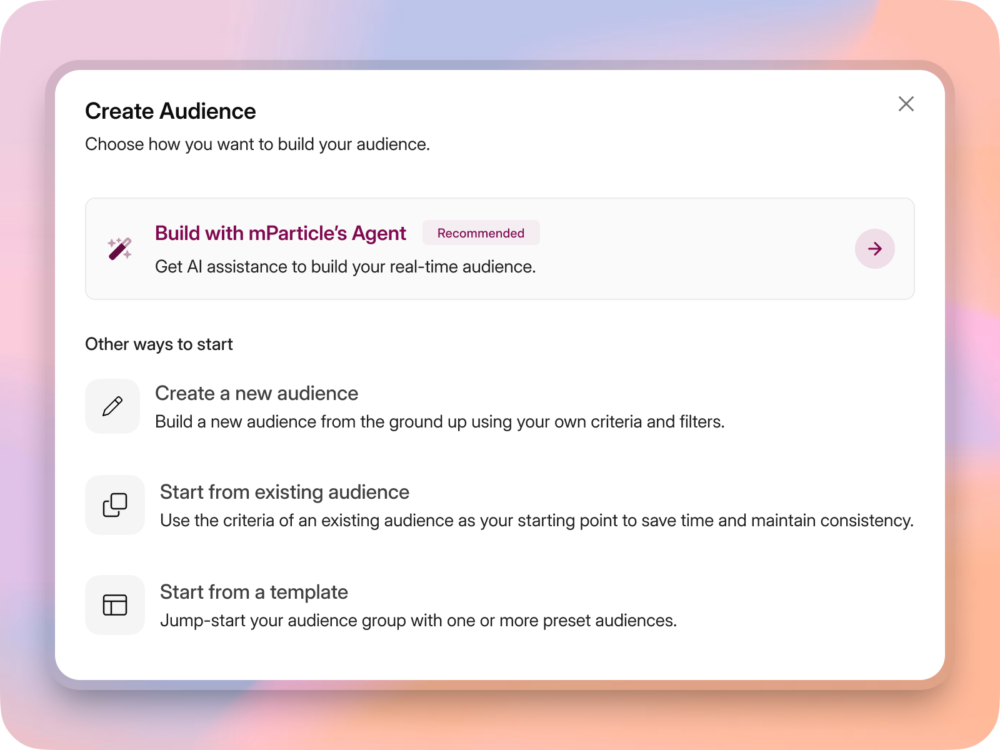
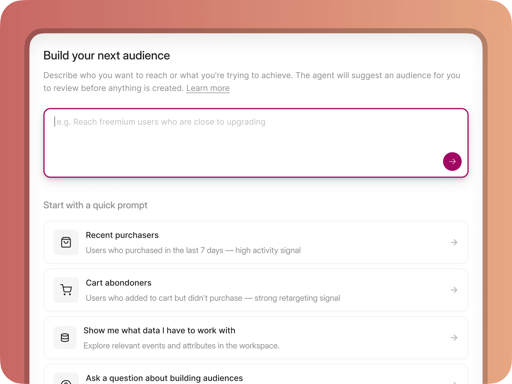
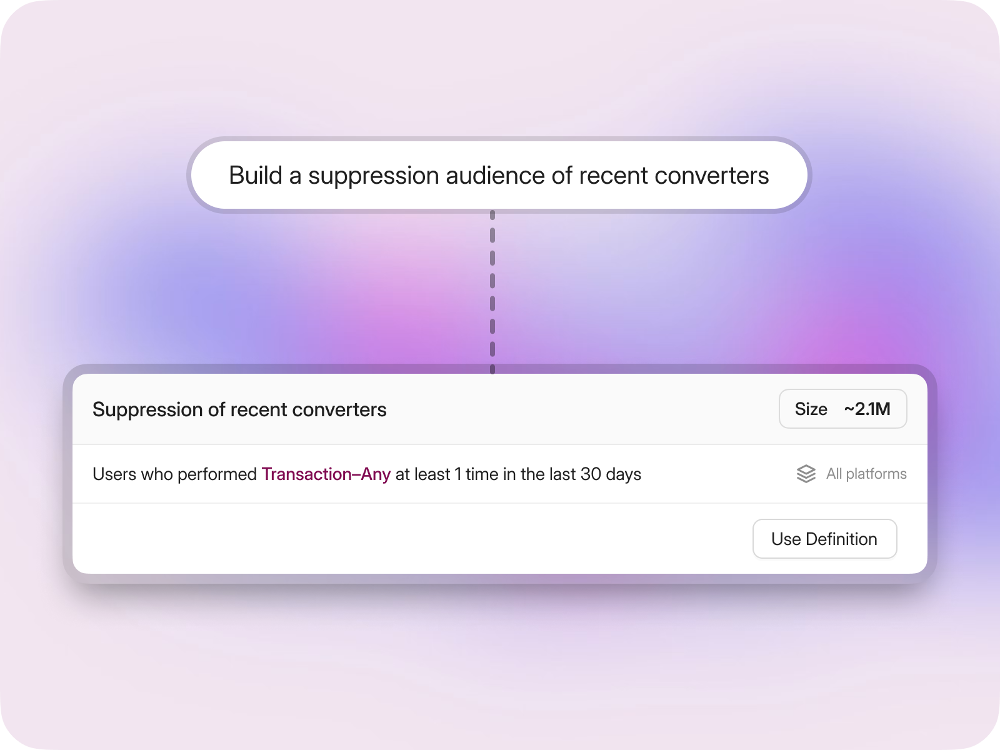
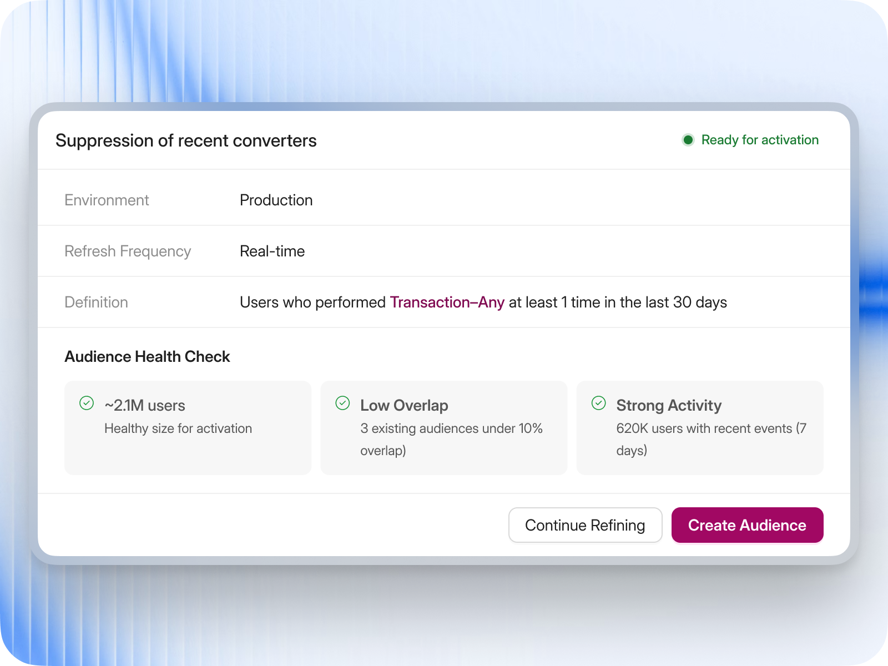
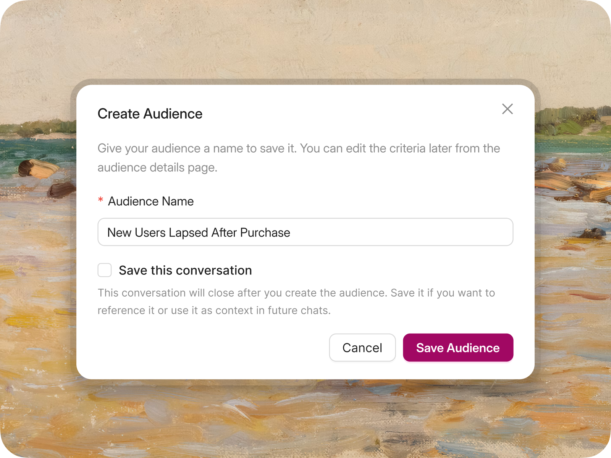
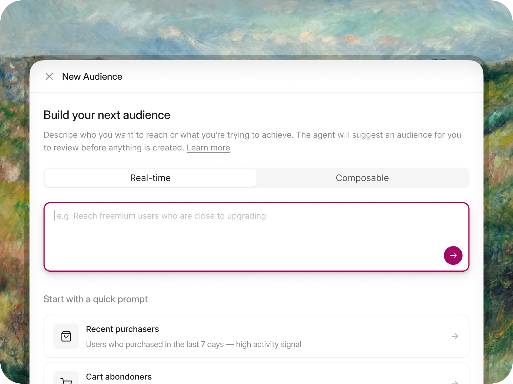
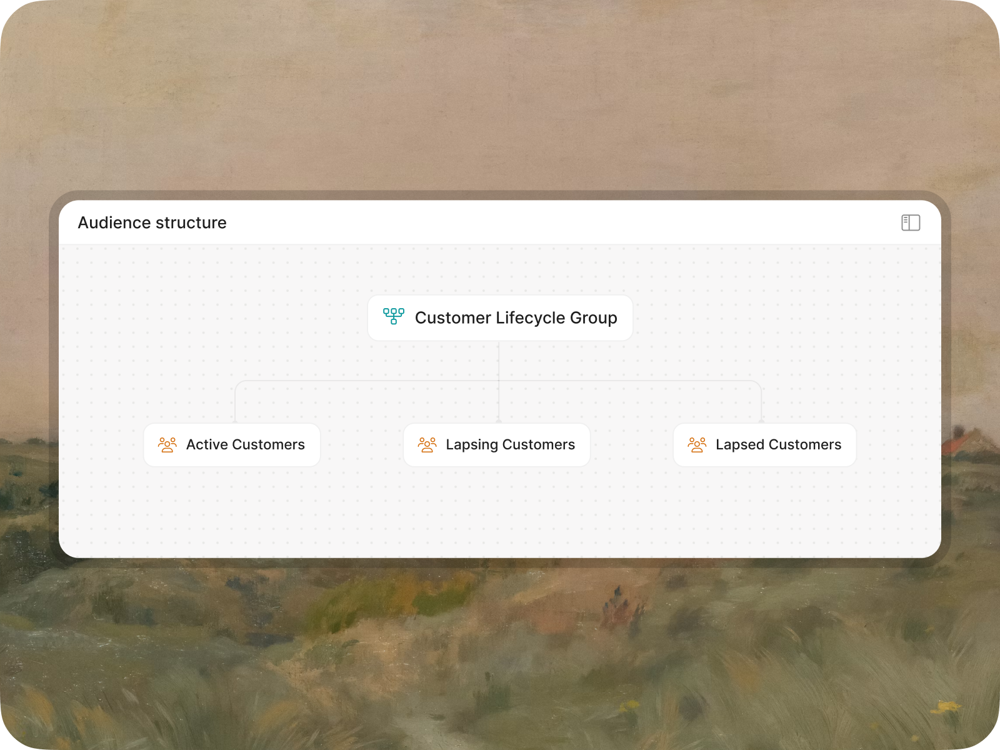
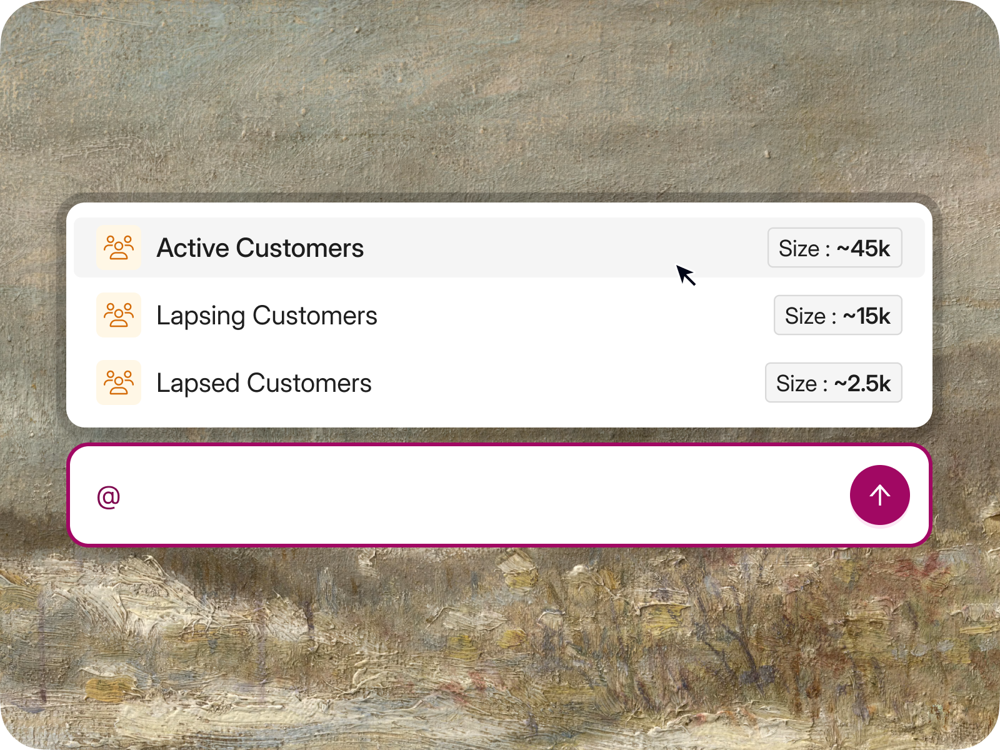
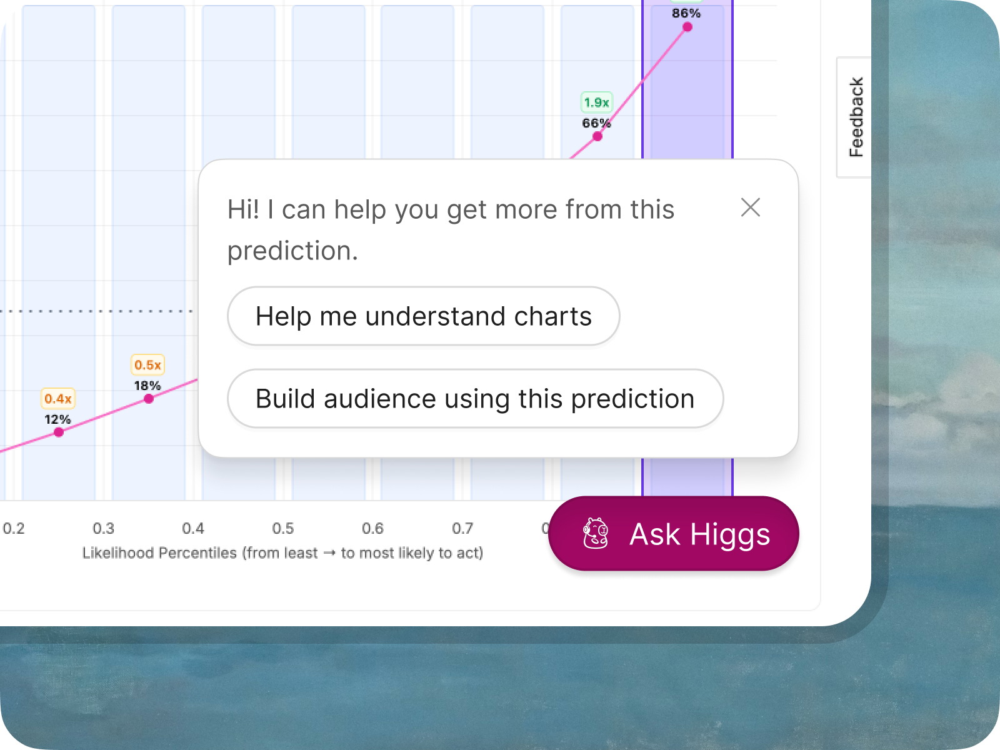
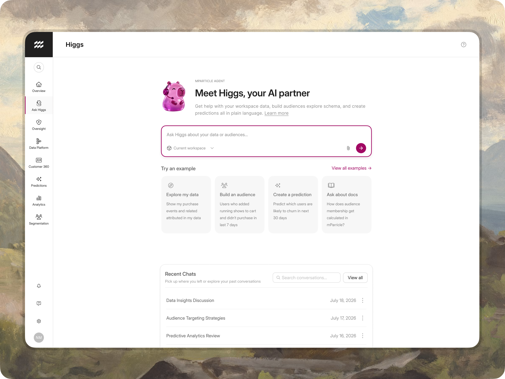

Overview
Audience Agent
Led the design of Audience Agent: customer research, UX vision, agentic design principles, end-to-end flows, and agent evals.
Single-node and composable audience creation workflows, with responses shortened by roughly 25-30%.
01 / The problem
Marketers knew who they wanted to reach, but not how to find them.
Marketers knew which customers they wanted to reach, but building those audiences in mParticle required technical knowledge. They had to understand their company's data schema, identify the right events and attributes, and combine them using Boolean logic.
Similar event names and multiple data sources made it easy to select the wrong data. As a result, many marketers wrote audience requirements and handed them to data engineers, who built and maintained the audiences.
An analysis of calls across 20 customer accounts found that nine struggled with manual audience creation and seven had trouble finding the right data.
02 / The approach
Let marketers describe the audience. Let the agent do the rest.
The goal was to let marketers describe the audience they wanted in plain language, then have the agent find relevant data and propose a definition they could review. Three design decisions shaped the experience.
03 / Testing and iteration
Trust broke down when the agent said too much.
Early tests exposed a problem: the agent's responses were too long. With roughly six turns per audience creation, users had to read too much text before reaching a usable result.
We shortened responses by approximately 25-30%, cutting down up to 800 words from a typical conversation. I also worked with engineering to replace technical progress messages with language users could understand.
I proposed a hybrid experience with interactive cards and chat, but early engineering constraints meant the initial version relied more heavily on text.
04 / Outcome
Two shipped versions, and a lighter agent.
Single-node and composable audience creation workflows.
Responses shortened, cutting up to 800 words from a typical conversation.
05 / The product
From building one audience to working across mParticle.

Meet users where they already work
I placed the agent alongside existing ways to create an audience instead of forcing users into a new workflow. Marketers could choose AI assistance while experienced users could keep building manually.

Start with the goal, not the schema
Instead of asking marketers to choose events, attributes and filters, the agent starts with a plain-language goal. Quick prompts also help users who know what they want to achieve but don’t know how to express it as audience criteria.

Turn intent into something concrete
The agent translates a marketing goal into a proposed audience definition, including the event, time window and estimated size. This gives users something specific to inspect and refine instead of a long text response.

Make the agent’s work easy to check
Before anything is created, the agent summarizes the audience definition and checks signals such as size, overlap and recent activity. Users can refine the result or approve it themselves.

Keep useful context beyond the chat
Audience creation doesn’t end with the conversation. I explored saving chat history with the audience so users could return to the reasoning behind a decision and reuse that context later.

One entry point for different audience types
As the agent expanded, the same natural-language entry point could support both real-time and composable audiences. Users choose the audience type without having to learn a separate AI workflow.

From single audiences to connected audience groups
The first version of the agent could create one audience at a time. I explored how it could handle more complex requests by creating multiple audiences at once and organizing them into parent-child relationships. The structure made the agent’s interpretation visible so users could review how each audience fit into the larger group.

Let users refine parts of the result
Complex audience groups need more than whole-response regeneration. I explored direct references to individual audiences so users could ask the agent to change one part while keeping the rest of the structure intact.

Bring the agent to the task
Predictions opened up workflows that crossed product boundaries. Instead of making users start a new conversation, I explored contextual entry points where the agent could explain a prediction or use it to build an audience.
06 / Key takeaways
Agent behavior is a design problem.
- Agent behavior is a design problemDefining when an agent should act, ask, or stop was as important as designing the interface.
- More information doesn't always create more trustShorter responses, clear assumptions, and structured audience definitions helped make the agent's work easier to understand.
- Conversation and UI serve different purposesNatural language makes it easier to express a goal, while structured controls help users review and refine the result.

From Audience Agent to a platform agent
The longer-term direction brought specialized workflows into one agent. Users could explore their data, build audiences, create predictions and return to past conversations from a shared starting point.